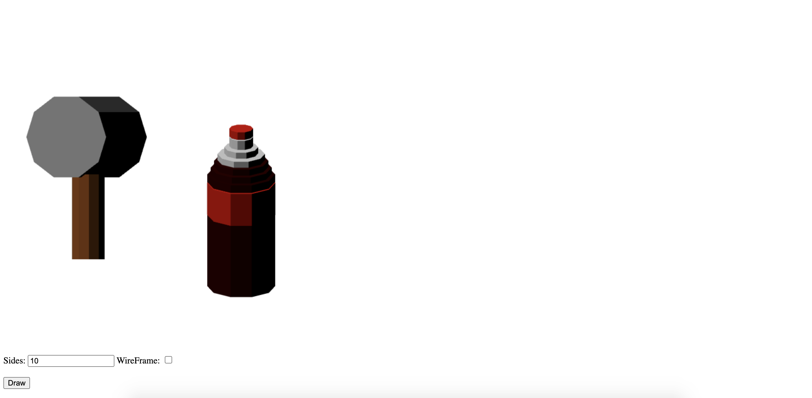

3d Cylinder
Eagle Huang
ID = 1662683
Functions
- User can specify number of sides for the unit-cylinder
- Multiple instances of the unit-cylinder is created and transformed to create a mallet and a soda bottle
- Flat Shading is applied on the objects
- Displays rendered 3d objects onto a html canvas
- Users can choose to render 3b object as wireframe or flatshading
Instructions on the Running Code:
- Open asg2.html in a browser
- Specify the number of sides for the cylinders
- Toggle wireframe "on" or "off"
- Click "Draw" to generate the objects
Driver HTML Code: asg2.js
JavaScript Code: asg2.html
Example Output
